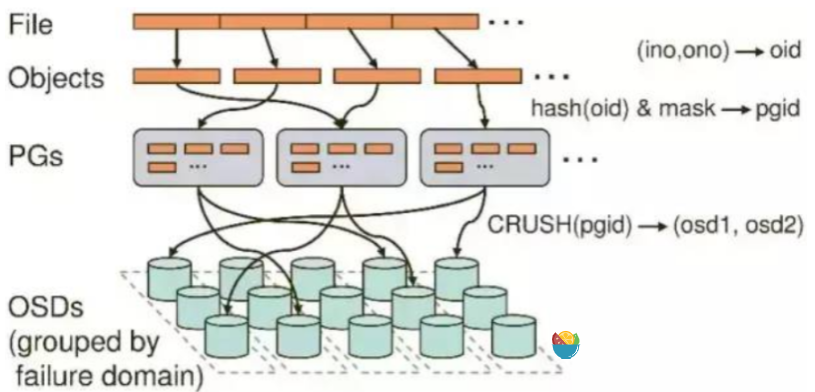
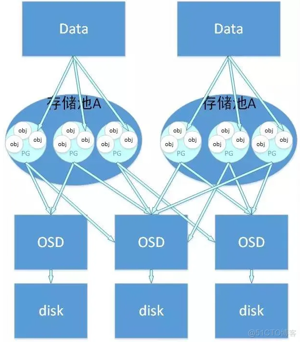
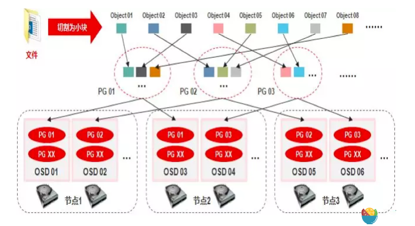
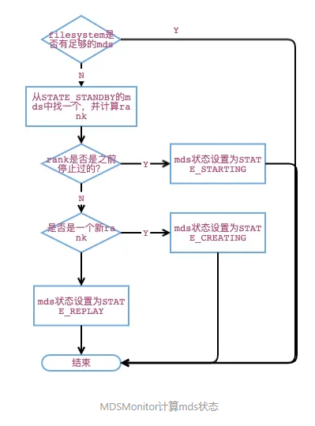
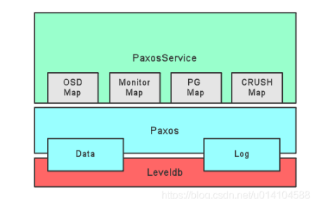
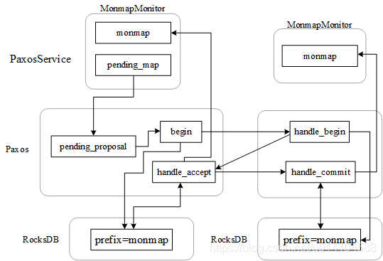

Ceph简介
所有Ceph存储集群的部署集群的部署都始于各Ceph节点、网络和Ceph存储集群的配置。最简的Ceph存储集群至少要一个Ceph监视器，Ceph管理器，和Ceph OSD(对象存储守护进程)。要跑Ceph文件系统客户端的话，还必须有Ceph元数据服务器。
Monitors: Ceph监视器（ceph-mon）维护着集群状态的各种运行图，包括监视器运行图，管理器运行图，OSD运行图，MDS运行图，和CRUSH图。
Managers: Ceph管理器守护进程（ceph-mgr）负责持续跟踪运行时指标和Ceph当前的状态，包括存储利用率，当前的性能指标，和系统负载。Ceph管理器守护进程还托管着基于python的插件。
Ceph OSDs: Ceph OSD(对象存储守护进程，ceph-osd)负责存储数据，处理数据复制，恢复，重均衡，以及向Ceph监视器和管理器提供些监控信息.
MDSs: Ceph 元数据服务器（MDS，ceph-mds）为Ceph文件系统存储元数据。（Ceph块设备和Ceph对象存储不使用MDS）。元数据服务器有益于POSIX文件系统用户执行基本命令。
Ceph 把数据保存为逻辑存储池内的对象。根据 CRUSH 算法， Ceph 可计算出哪个归置组应该持有指定对象， 然后进一步计算出哪个 OSD 守护进程持有归置组， 正因为有了 CRUSH 算法， Ceph 存储集群才具备动态伸缩、重均衡和动态恢复功能。
注意事项
- Ceph允许每块硬盘驱动器上允许多个OSD，但这会导致资源竞争并降低总体吞吐量。
- 机架之间至少要配备 10Gbps 以上的网络连接。
- 如果在只有一块硬盘的机器上运行 OSD ， 要把数据和操作系统分别放到不同分区； 一般来说，我们推荐操作系统和数据分别使用不同的硬盘。
OSD
实际存储数据的进程，通常一个OSD daemon 绑定一个物理磁盘。Client write/read数据最终都会走到OSD去执行 write/read操作。
一个OSD上可以分布多个pg
osd设备是存储RAODS对象的载体
BLUESTORE
BlueStore是个专用存储后端，是为Ceph OSD工作载荷专门设计的，用于管理磁盘上的数据。BlueStore是在支持和管理FileStore OSD十年之久的基础上涉及到。
BlueStore的关键功能包括：
- 直接管理存储设备。BlueStore使用的是原始块设备或分区。这样可以避免抽象的中间层（类似XFS的本地文件系统），它们会降低性能，或增加复杂性。
- 用RocksDB管理元数据。RocksDB的键值数据库是嵌入式的，可以用于管理内部元数据，包括对象名到磁盘上数据块位置的映射情况。
- 完整的数据及其元数据校验和。默认情况下，写入BlueStore的所有数据和元数据都会被一个或多个校验和保护起来。数据或元数据从磁盘读出来，没有校验不会返回给用户。
- 内联压缩。数据写入磁盘前 可以选择性压缩。
- 元数据在多个设备上分级存储。BlueStore 允许它的内部日志（预写日志）写到一个单独的、 高速设备（像 SSD 、 NVMe 、或 NVDIMM ）上，以提升性能。 如果高速存储的数量足够， 内部元数据可以存储在高速设备上。
- 高效的写时复制（ copy-on-write ）。 RBD 和 CephFS 快照功能全靠 BlueStore 实现的一种高效的写时复制 克隆（ clone ） 机制。 这就产生了高效的 I/O ，对于常规快照和纠删码存储池 （它仰仗克隆功能实现高效的二阶段提交）都是如此。
FILESTORE
- FileStore是Ceph存储对象的老方法。它依赖于标准文件系统（XFS）和用于元数据的键值数据库组合、
RADOS （Reliable Autonomic Distributed Object Store, RADOS）
RADOS 是Ceph 存储集群的基础。Ceph中的一切都以对象的形式存储，而RADOS就负责存储这些对象，而不考虑它们的数据类型。RADOS层确保数据一致性和可靠性。对于数据一致性，它执行数据复制，故障检测和恢复。还包括数据在集群节点间的recovery.
Ceph 的核心，ceph存储集群。
Ceph 的数据访问方法（如RBD， CephFS, RADOS GW和librados）的所有操作都是在RADOS层之上构建的。
当 Ceph 集群接收到来自客户端的写请求—CRUSH 算法首先计算出存储位置，以此决定应该将数据写入什么地方。— 信息传递到队DOS 层进行进一步处理。基于CRUSH 规则集，RADOS 以小对象的形式将数据分发到集群内的所有节点。最后，将这些对象存储在OSD 中。
RADOS 能够保证在一个RADOS 集群中的对象副本总是不少于一个，只要你有足够的设备。
RADOS集群是由若干服务器组成，每一个服务器上都相应会运行RADOS的核心守护进程（OSD、MON、MDS）。具体守护进程的数量需要根据集群的规模和既定的规则来配置。
MON （monitor）
- Monitor 在Ceph 集群中扮演着管理员的角色，维护了整个集群的状态，是Ceph集群中最重要的组件。
- Mon保证集群的相关组件在同一时刻能够达成一致，相当于集群的领导层，负责收集、更新和发布集群信息。为了规避单点故障，在实际的Ceph部署环境中会部署多个Mon，同样会引来多个Mon之前如何协同工作的问题。在一个标准的Ceph环境中，Monitor的功能可以分为以下两点
- 管好自己：
- 多个monitor之间如何协同工作，怎么同步数据
- 管理集群信息
- 数据的存储，保证数据存储的正确性等。
- 管好自己：
Librados
- 简化访问RADOS的一种方法，目前支持PHP、Ruby、Java、Python、C和C＋＋语言。它提供了Ceph 存储集群的一个本地接口RADOS ，并且是其他服务（如RBD 、RGW） 的基础，以及为CephFS 提供POSIX 接口。librados API 支持直接访问RADOS ，使得开发者能够创建自己的接口来访问Ceph 集群存储。
RBD
- ceph 块设备。对外提供块存储，可以像磁盘一样被映射，格式化以及挂载到服务器上。支持snapshot
RGW
- ceph 对象网关，提供了一个兼容S3和Swift的restful API接口。RGW还支持多租户和Openstack的keyston身份验证服务。
MDS
- ceph 元数据服务器，跟踪文件层次结构并存储只供CephFS使用的元数据。Ceph块设备和RADOS网关不需要元数据。MDS不直接给client提供数据服务。
CephFs
- 提供了一个任意大小且兼容POSIX的分布式文件系统，CephFS依赖Ceph MDS来跟踪文件层次结构，即元数据。
ceph中对象的概念
- 一个是RGW中的对象存储
- 面向用户，用户接口能够访问到的对象
- 一个是Ceph的后端存储的对象（RADOS对象）
- ceph服务端操作的对象
RADOS 对象
- 对象是数据存储的基本单元，一般默认4MB大小。
- 三部分：
- 对象标志（ID）：唯一标识一个对象
- 对象的数据：其在本地文件系统对应一个文件，对象的数据就保存在文件中
- 对象的元数据：以key-value 键值对的形式，可以保存在文件对应的扩展属性中。
PG
PG是OSD之上的一层逻辑，可视其为一个逻辑概念。从名字可理解PG是一个放置策略组，它是对象的集合，该集合里的所有对象都具有相同的放置策略：对象的副本都分布在相同的OSD列表上。
关系说明：
(1) PG有主从之分，对于多副本而言，一个PG的主从副本分布在不同的OSD上；
(2) 一个对象只能属于一个PG，一个PG包含很多个对象
(3) 一个PG对应于一个OSD列表，PG的所有对象对存放在对应的OSD列表上
这里的对象是rados object,而非用户对象PG是ceph把数据存储到OSD之前的一个中间层，可以看作索引。
- PG是ceph 中的最小管理单元，数据恢复，数据迁移都是对一个个PG做的。
PG的数量
没有固定的规定一个PG是多大，要有多少个PG。
PG会耗费CPU与内存，如果太多PG会消耗大量的CPU与内存。
但是太少了的话，每个PG中对应的数据就多，数据定位相对就慢，数据恢复也会慢。
创建Pool的时候需要指定PG数量。
Pool的PG数量以后也可以修改，只是会重新均衡Pool中的数据。无论怎么计算PG数量，一定需要是2的N次幂。其他值将导致OSD上的数据分布不均
pool
- Pool是一个抽象的存储池，它是PG之上的一层逻辑
它规定了数据冗余的类型以及对应的副本分布策略。目前实现了两种pool类型：replicated类型和Erasure Code类型。
关系说明：
(1) 一个pool由多个PG构成，一个PG只能属于一个POOL
(2) 同一个Pool中的PG具有相同的类型，比如，如Pool为副本类型，则Pool中所有的PG都是多副本的
Beacon 组件
- Ceph Beacon 组件是Ceph存储集群中的一个重要组件，它的作用是检测并报告存储集群的监控状况
- Ceph Beacon 组件会定期向Ceph存储集群中的各个节点发送心跳信号，用以检查节点的可用性。
- 如果某个节点长时间没有回应心跳信号，Beacon组件会将其标记为离线状态，并通知整个存储集群。
- Ceph Beacon组件还会检测集群中各个OSD（对象存储守护进程）的健康状况。如果某个OSD出现故障或异常，Beacon组件会及时发出警告
- 在ceph 集群中起到监控和报警的作用，保障了集群的稳定性和可用性。
msg dispatcher
messenger调度器队列的头部（dispatcher head）是指首先被调度执行的dispatcher。头部的dispatcher通常用于处理较高优先级的消息或事件，例如处理控制消息或管理任务。同时，头部的dispatcher也可以拦截或过滤消息，从而提供一些派遣消息的额外逻辑。
而尾部（dispatcher tail）是指按照添加顺序执行的dispatcher队列中的最后一个dispatcher。尾部的dispatcher通常用于处理低优先级的消息或事件，例如处理数据传输或其他常规任务。尾部的dispatcher也可以作为响应处理完以后默认的派遣路径。
auth 组件
数据安全性：验证可以防止未经授权的组件访问和修改敏感数据。通过验证组件间的通信可以确保数据只能被授权的组件访问和修改，从而保护数据的安全性。
身份认证：验证可以保证通信双方的身份合法，防止冒充和伪造。通过验证可以确保通信的双方都是经过身份认证的合法组件，避免了可能的冒充和伪造，提高了系统的安全性。
权限控制：验证可以限制组件之间的访问和操作权限。通过验证可以实现对组件间通信的权限控制，确保只有具备相应权限的组件才能进行特定的操作性。通过验证可以检查传输的数据是否完整、准确，并且与原始数据保持一致，从而避免了因为通信错误而引起数据的不一致和错误。
总之，主要是为了确保通信的安全性和完整性。验证可以防止未经授权的访问或篡改消息的发生。在Ceph中，通常会使用密钥或数字签名等方法对消息进行验证，以确保消息的发送者和内容的真实性。通过验证，组件间的通信可以信任，并且可以防止恶意或错误的消息导致系统出现问题。同时，验证也可以帮助检测和排除网络通信中的故障或错误。
守护进程和实体
实体（Entities）：Ceph中的实体通常指的是集群中负责存储或访问数据的各类组件，这些实体可以是物理机器，也可以是运行在这些物理机器之上的各类服务。它们有自己的实体名（entity name），可以根据实体类型（如客户端、监控节点、元数据服务器、OSD等）和数字ID组合生成。
Ceph中的守护进程是指运行在实体上的后台服务程序。它们执行实体的各项功能，可以独立启动和关闭，并向外提供各种服务。具体来说就是 MON, OSD, MDS, RGW, MGR 这些服务进程。
因此，可以理解为，实体是守护进程运行的载体，是物理的概念；而守护进程则是运行在实体之上的各类服务。
MDS
- MDS Rank类，代表一个元数据服务器，负责处理元数据读写请求。
- MDS Cache 类，用于缓存文件系统元数据，当客户端请求元数据时，MDS先从该缓存中查找，如果没有，则需要从磁盘读取。
- Server类，主要负责处理客户端的请求，包括元数据的读写操作，创建，删除文件等。
- Locker类，主要负责元数据的锁定和版本管理，保证元数据的一致性并发访问。
- LogSegment 类和 MDLog 类是实现元数据的持久化。
日志 元数据
Ceph的CephFS中，元数据的持久化是通过LogSegment类和MDLog类来完成的。Ceph通过这两个类来构造一种日志系统，将元数据的操作记录在日志中并持久化。
LogSegment 类：这个类主要是用于表示元数据日志的一个时间段。CephFS会把修改元数据的操作按时间顺序分段录入日志，每个LogSegment对象就代表了一段时间内的所有元数据的修改操作。
MDLog 类：这个类是元数据日志（Metadata Log，MLog）的具体实现。MLog是一个元数据操作的顺序记录，CephFS通过MLog来维护元数据操作的一致性和顺序性。MDLog类会使用一个LogSegment对象的列表来存储当前的元数据日志。当一个LogSegment对象被填满后，MDLog会开辟一个新的LogSegment对象来继续记录元数据的操作。
总结，LogSegment类和MDLog类主要是通过创建日志系统，记录元数据的操作来实现元数据的持久化操作。对元数据的任何修改，都会记录在LogSegment中，然后通过MDLog持久化存储，以便在系统出现问题时，可以通过日志来恢复元数据的状态。
文件数据写入的过程

RADOS中基本的存储单位是对象，一般为2MB或4MB，当一个文件要存入RADOS时，首先会被切分成大小固定的对象（最后一个对象大小可能不同），然后将对象分配到一个PG（Placement Group）中，然后PG会复制几份，伪随机地派给不同的存储节点。
<1> File—— 用户需要存储或者访问的文件。
<2> Object—— RADOS的基本存储单元。Object与上面提到的file的区别是，object的最大size由RADOS限定（通常为2MB或4MB），以便实现底层存储的组织管理。因此，当上层应用向RADOS存入size很大的file时，需要将file切分成统一大小的一系列object（最后一个的大小可以不同）进行存储。
<3> PG（Placement Group）—— 对object的存储进行组织和位置映射。具体而言，一个PG负责组织若干个object（可以为数千个甚至更多），但一个object只能被映射到一个PG中，即，PG和object之间是“一对多”映射关系。同时，一个PG会被映射到n个OSD上，而每个OSD上都会承载大量的PG，即，PG和OSD之间是“多对多”映射关系。在实践当中，n至少为2（n代表冗余的份数），如果用于生产环境，则至少为3。一个OSD上的PG则可达到数百个。事实上，PG数量的设置牵扯到数据分布的均匀性问题。
<4> OSD—— 即object storage device，前文已经详细介绍，此处不再展开。唯一需要说明的是，OSD的数量事实上也关系到系统的数据分布均匀性，因此其数量不应太少。在实践当中，至少也应该是数十上百个的量级才有助于Ceph系统的设计发挥其应有的优势。
各层次之间的映射关系：
- <1> file -> object
object的最大size是由RADOS配置的，当用户要存储一个file，需要将file切分成几个object。 - <2> object -> PG
每个object都会被映射到一个PG中，然后以PG为单位进行备份以及进一步映射到具体的OSD上。 - <3> PG -> OSD
根据用户设置的冗余存储的个数r，PG会最终存储到r个OSD上，这个映射是通过一种伪随机的映射算法 CRUSH 来实现的，这个算法的特点是可以进行配置。


Ceph数据的写入流程
- <1> 数据通过负载均衡获得节点动态IP地址；
- <2> 通过块、文件、对象协议将文件传输到节点上；
- <3> 数据被分割成4M对象并取得对象ID；
- <4> 对象ID通过HASH算法被分配到不同的PG；
- <5> 不同的PG通过CRUSH算法被分配到不同的OSD
MDS
CephFs
MDS和Monitor交互
为提供FS服务，首先要ceph fs new 命令创建 filesystem. 然后再启动mds进程
ceph fs new 命令由mds monitor 组件处理，将一个文件系统信息（底层pool是哪些，一些feature等）写入monitor store, 此时文件系统时没有关联mds的，所以是不可用的。
mds进程启动后，通过向mds monitor发生beacon 消息。并接收从MDSMonitor返回的MDSMap消息逐步启动自己。
Beacon除了用于告知monitor关于mds的健康状态，还有want_state这一信息。want_state的值是在mds启动或者收到MDSMap后由mds自己决定的(如向resolve、reconnect、rejoin等转换）。
代码流程
- Monitor client 向 monitor 发生命令，::handler_ command,
- 找到mds monitor, mdsmonitor::prepare_command()
- 更新pending_fsmap (尚未完成的,尚未被解决的fsmap), 写入store。
- MDSMonitor::tick()在每次写完store后被调用，对pending_fsmap进行遍历。
- 给fsmap（file system map 信息）关联mds，然后更新pending_fsmap,再次写入store,完成后向mds发送MDSMap。关联到fsmap的mds分为两类：一类是具有rank的，最终mds daemon会进入到STATE_ACTIVE状态，其中rank值由MDSMonitor分配
- 另一类是STATE_STANDBY_REPLAY，每个fsmap最多有一个，没有rank值。关联动作是通过遍历已创建fs map（如果创建了多个filesystem，那么此处就会有多个fs map），寻找可用的处于STATE_STANDBY状态的mds实现的，具体在MDSMonitor::maybe_expand_cluster()。
在众多mds状态中，由MDSMonitor路径负责的状态转换只有一部分，所以在MDSMonitor的代码里不会看到全部mds状态。其他状态转换是在mds端做的决策，此时monitor只是作为一个记录者，负责将状态写入store中。
MDS状态
MDSMonitor 每次写完store后都会由MDSMonitor::tick() 做三件事
- 查看是否有filesystem需要关联mds
- 查看是否有非健康的mds
- 查看是否需要将mds从STATE_STANDBY变成STATE_STANDBY_REPALY
对于filesystem关联mds，是由MDSMonitor::maybe_expand_cluster()完成。

状态分类
在正常启动阶段，MDSMonitor代码，以及MDSMonitor调用的FSMap::promote中主要使用了以下状态：
- STATE_STANDBY ：收到BOOT beacon时直接设置mds为此状态，表明空闲可用
- STATE_STANDBY_REPLAY
- STATE_CREATING：全新的rank，表明mds需要准备journal对象等元数据，由于没有历史包袱，所以这里不需要load元数据或者replay日志之类的操作
- STATE_STARING：停止的rank，不需要创建journal等元数据，但需要load元数
- STATE_REPLAY
对于resolve等状态MDSMonitor是不涉及的，这些是在MDS端处理。
MDS启动过程
- 命令行参数解析
- 全局初始化工作
- 初始化堆栈分析器，需设置CEPH_HEAP_PROFILER_INIT的env
- fork 子进程，等待子进程退出
- 创建一个Messenger实例并进行相关配置，用于消息的收发
- monmap的获取
- 新建一个MDSDaemon实例并初始化
- mds启动后默认开一个启定时器，间隔为mds_tick_interval(默认5s)
- mds的消息处理入口为ms_dispatch2
MDS 之间通信
Ceph MDS (Metadata Server) 是 Ceph 存储系统的一部分，负责管理文件系统的元数据信息。它采用了一种分布式的、高可用的通信架构来实现元数据的管理和访问。
Ceph MDS 系统由多个 MDS 守护进程组成，每个 MDS 进程都可以独立地运行在不同的节点上。这些 MDS 进程之间通过内部通信协议来进行相互通信和数据交换，保持元数据的一致性和正确性。
Ceph MDS 之间的通信主要包括以下几个方面：
客户端请求：当客户端需要对文件系统进行操作时，它会发送相应的请求给 MDS。请求可以包括文件创建、读取、写入、删除等操作。MDS 会根据请求的类型和内容进行处理，并返回相应的响应给客户端。
元数据修改：当需要修改文件系统的元数据时，例如更新文件的属性、重命名文件等操作，MDS 进程之间需要进行元数据的传输和同步。通过协议和算法，MDS 进程可以实现元数据的分布式更新和一致性。
元数据缓存更新：为了提高元数据的访问效率，Ceph MDS 会将一部分元数据缓存在内存中，以减少磁盘 IO 的开销。当元数据发生变化时，MDS 会将相应的更新信息发送给其他 MDS 进程，以保证缓存的一致性。
数据传输：当客户端需要读取或写入文件时，MDS 会将相应的数据块的位置信息返回给客户端，以便进行数据的传输。MDS 进程之间也可能需要进行数据的传输，以实现文件的复制、迁移等操作。
总之，Ceph MDS 的通信架构是基于分布式系统的原则，通过协议和算法来实现元数据的管理和访问。这种架构可以提供高可用性、容错性和性能的优化，使得 Ceph 存储系统能够适应大规模和高并发的应用场景。
流程
Ceph MDS（元数据服务器）是Ceph文件系统中负责管理文件系统元数据的组件。它负责跟踪文件和目录的层次结构，处理文件和目录的操作，以及维护文件系统的一致性。
以下是Ceph MDS源码的主要流程：
初始化：Ceph MDS启动时，它需要进行一些初始化操作，包括加载配置文件、建立与Ceph监视器和存储器之间的连接等。
启动服务：初始化完成后，Ceph MDS开始监听客户端的连接请求，并开始提供文件系统服务。
客户端请求处理：当Ceph MDS接收到客户端的请求时，它会先检查请求的合法性，然后根据请求的类型进行相应的处理。处理的过程包括直接回复、发起元数据操作、读取元数据等。
元数据操作：当Ceph MDS需要对文件系统的元数据进行操作，比如创建文件、删除文件、重命名文件等，它会通过与Ceph监视器和存储器之间的通信来实现。具体的操作过程包括更新元数据、更新目录的链接信息、更新权限等。
元数据日志：Ceph MDS将对文件系统的元数据操作记录在元数据日志中，以便在发生故障时可以进行恢复。
元数据故障恢复：如果Ceph MDS遇到故障，比如崩溃或网络中断，它需要进行故障恢复以保持文件系统的一致性。恢复的过程包括重新加载元数据、检查日志、恢复丢失的操作等。恢复完成后，Ceph MDS可以继续提供文件系统服务。
停止服务：当Ceph MDS需要停止服务时，它会先关闭与客户端的连接，然后释放资源，最后退出。
Ceph Monitor Paxos实现

Monitor的Paxos实验主要包括leveldb, Paxos和PaxosService三层，其中Leveldb负责底层存储，同时也负责PaxosService给Paxos传递数据。
(1) 主monitor收到客户端修改monmap请求，monitor节点更新暂时记录在pending_map中。
(2) 将pending_map编码(bl)，并将<“monmap”+pending_map.epoch, bl>和<“monmap”+“last_committed”，pending_map.epoch >（下面的说明中，省去”monmap”前缀）添加到pending_proposal所代表的MonitorDBStore缓存中，pending_proposal就代表了需要在monitor集群间同步的数据。
(3) 主monitor调用paxos层的begin函数开启paxos算法的第一阶段，begin记录<last_committed+1, pending_proposal>、<“pending_v”, last_committed+1>、<“pending_pn”, accepted_pn>到RocksDB数据库，这三个键值对分别表明了下一个要commit的版本号和提议内容、下一个要commit的版本号，本节点的提议号，主节点的accepted_pn表示本次选举后的提议号，每次选举后都会生成一个递增的提议号，从节点的表示接受到的最大提议号，(当节点故障恢复后，可以从RocksDB获得这上键值对，继续工作)。然后将pending_proposal中的内容分发到quorum里的其它monitor从节点，这部分消息叫OP_BEGIN。
(4) 从节点收到OP_BEGIN消息后，如果对方的提议号小于自己接受过的最大提议号，则不作任何回应，否则和主节点一样，记录<last_committed+1, pending_proposal>、<“pending_v”, last_committed+1>、<“pending_pn”, accepted_pn>到RocksDB数据库。并给主节点回应OP_ACCEPT消息。
(5) 如果主节点收到了全部从节点的OP_ACCEPT消息，就记录<“last_committed”, last_committed+1>键值对到数据库，并给从节点发送OP_COMMIT消息。自己则从数据库中读取最新版本的monmap。
(6) 从节点收到OP_COMMIT消息后，将最新commit的内容记录到RocksDB数据库，并更新monmap。
cephfs 创建
创建 CephFS：
- 在
src/mds/MDS.cc中，首先需要创建一个 CephFS 实例。此过程涉及到调用MDSMap::create方法创建一个 MDSMap 对象，该对象负责管理 MDS 守护进程的信息和状态。之后，需要从 Monitors 获取全局的 Ceph 配置信息，包括 MDS 的数量、标记位等。
- 在
创建 MDS 守护进程：
- 在
src/mds/MDS.cc中，调用MDS::create方法，对每个 MDS 守护进程创建一个实例。这个过程包括对守护进程属性的设置，如日志文件路径、内存限制等。之后，启动 MDS 守护进程，并开始监听客户端的请求。
- 在
客户端挂载 CephFS：
- 当客户端挂载 CephFS 时，它会向 MDS 守护进程发送 MDS 拓扑查询请求。MDS 守护进程会通过
InodeHierarchyManager来处理该请求。在src/mds/InodeHierarchyManager.cc中，连接到 MDS 守护进程的客户端会发送MClientRequest请求，并在MClientHandler中处理请求。该处理会调用Client::mount方法，其中创建一个Client对象，并与 MDS 进行通信，建立与 MDS 的会话。
- 当客户端挂载 CephFS 时，它会向 MDS 守护进程发送 MDS 拓扑查询请求。MDS 守护进程会通过
拓扑查询过程：
- 在
src/mds/Server.cc中，handle_client_query方法负责处理来自客户端的查询请求。该方法会先通过调用mds->balancer->calc_fs_topology方法获取文件系统的拓扑结构。之后，会调用mds->sessionmap.get_sessions方法获取与 MDS 会话相关的信息。
- 在
响应客户端请求：
- 在
src/mds/MDSRank.cc中的handle_query方法会分析拓扑结构信息，并将结果返回给客户端。在src/client/MetaSession.cc中，客户端会处理 MDS 拓扑结构的响应，包括更新并缓存 MDSMap、MDS 的状态等。
- 在
main 流程
ceph_pthread_setname(pthread_self(), “ceph-mds”); 的作用是将当前线程的名称设置为 “ceph-mds”。这样可以方便地识别和调试当前线程在多线程程序中的执行情况。
ceph_heap_profiler_init()函数的作用是启堆内存分析器是用于跟用 Ceph 堆内存分析器。追踪和分析应用程序中的堆内存分配和释放的工具。它可以提供有关内存使用情况的详细信息，例如内存泄漏和不正确的内存管理。通过调用ceph_heap_profiler_init()函数，可以在程序执行开始时启用堆内存分析器，从而进行内存分析和优化。‘ argv _ to _ vec’函数将传递给‘ main’函数的命令行参数转换为字符串的向量。这很有用，因为它允许更容易地操作和访问代码中的命令行参数。
ceph_argparse_need_usage(args)的作用是检查命令行参数中是否包含–help或-h选项，如果包含则返回true，表示需要打印使用说明。
global_init 是 Ceph 中的一个函数，用于进行 Ceph 的全局初始化。它接受以下参数：命令行参数数组
entity_type：Ceph：
argc：命令行参数数量
argv 实体类型，可以是 MDS、OSD、MON、RGW 等
code_env：代码运行环境，可以是 DAEMON、CLIENT 等
flags：全局初始化标志，用于指定一些选项，例如是否启用调试模式等括解析命令行参数、设置全局变量、创建和启动 MDS、OSD、MON 等子系统，最终返回一个 Ceph 上下文（CephContext）对象，可以在后续的代码中使用该对象进行各种操作。
在上述代码中，global_init 函数的返回值被赋给了 cct 变量，表示 Ceph 的上下文对象。
preforker
Preforker forker是一个用于预分叉（prefork）的工具，它的作用是在服务器应用程序启动之前预先创建多个子进程，每个子进程都有自己的资源并能够独立处理客户端请求。这种预分叉的方式可以避免每次处理请求都需要创建新进程的开销，从而提高服务器的性能和响应速度。
具体来说，Preforker forker可以帮助服务器应用程序实现以下功能：
创建并管理多个子进程：Preforker forker可以在服务器启动时创建指定数量的子进程，这些子进程会共享服务器的监听端口和资源。
进程池管理：Preforker forker会维护一个进程池，将客户端请求均匀地分配给空闲的子进程处理。这样可以避免因为单个进程处理请求过多而导致的性能下降。
资源隔离：每个子进程都有自己独立的资源，包括内存、文件句柄等。这样可以避免不同请求之间相互干扰，提高了服务器的稳定性和安全性。
进程复用：Preforker forker可以在处理完一个客户端请求后，将子进程重新放回进程池中，以便下次请求可以复用该进程，减少了进程创建和销毁的开销。
总体来说，Preforker forker通过预先创建多个子进程，并有效地管理和复用这些子进程，可以提高服务器的并发处理能力和响应速度，提供更好的用户体验。
mds forker
在 MDS（Metadata Server）中，Preforker forker 是一种用于派生子进程的机制。它负责在 MDS 启动时，根据配置的参数预先派生一定数量的子进程。这些子进程会负责处理客户端的请求，并为每个请求分配一个进程来处理。
Preforker forker 的作用是提高 MDS 的并发处理能力。通过预先派生一定数量的子进程，可以避免请求到来时需要动态创建新进程的延迟，从而提高系统的响应速度和并发性。
此外，Preforker forker 还可以使用 CPU Affinity（CPU 亲和性）技术来将派生的子进程绑定到特定的 CPU 核心上，以进一步提高性能和避免 CPU 资源竞争。
总结来说，Preforker forker 对于 MDS 来说，是一种预先派生子进程用于处理客户端请求的机制，它能够提高系统的并发处理能力和响应速度。
在 Ceph 源代码的“ global _ init _ postfork _ start ()”函数中调用函数“ pick _ address ()”。下面是这个函数的功能概述:
它接受两个参数: ‘ g _ CEPH _ context’，这是一个指向 CEPH 上下文结构的指针，以及‘ CEPH _ PICK _ ADDRESS _ PUBLIC’，它指定所需要选择的网络地址类型。
在‘ pick _ address ()’函数中，它初始化一个空列表来存储称为‘ addres’的地址。
然后检查“ CEPH _ PICK _ ADDRESS _ PUBLIC”的值，以确定要选择的地址类型。在这种情况下，它将选择公共网络地址。
该函数执行一系列步骤来检索本地机器的公共 IP 地址。
它遍历计算机的所有网络接口，并排除那些标记为环回或点对点(例如，本地主机、虚拟接口)的接口。
对于每个剩余的网络接口，它检索与之关联的 IP 地址。
它基于某些条件对地址进行过滤，如 IPv4或 IPv6地址类型，排除链路本地地址，以及已经添加到“地址”列表中的地址。
经过筛选的 IP 地址随后被添加到“地址”列表中。
处理完所有网络接口后，“地址”列表包含本地计算机的公共 IP 地址。
总的来说，‘ pick _ address ()’函数负责根据给定的条件选择本地机器的合适公共 IP 地址，并将它们存储在‘ addres’列表中。
Global _ init _ postfork _ start ()
Global _ init _ postfork _ start ()函数是 Ceph 代码库的一部分。它是在 Ceph 存储系统初始化过程中的 fork ()系统调用之后调用的。此函数的用途是在 fork 之后的子进程中执行必要的初始化任务。
特别是，global _ init _ postfork _ start ()函数接受 g _ Ceph _ context 变量作为参数，并初始化 Ceph 在子进程中需要的各种全局资源。这些资源包括网络连接、线程池和其他系统级资源。
通过调用 global _ init _ postfork _ start (g _ Ceph _ context) ，Ceph 可以确保正确地设置子进程以执行其存储任务，而不依赖于父进程。
global_init_chdir common_init_finish
global_init_chdir 函数是一个用于在程序开始时进行全局初始化并设置当前工作目录的函数。它通常用于设置程序的运行环境和路径。
common_init_finish 函数是一个用于在程序结束时进行一些常见的清理工作的函数。它通常用于释放资源、关闭连接、保存状态等操作。
元数据持久化相关
元数据是什么，包含哪些？
日志
https://zhuanlan.zhihu.com/p/138086811
MDS 优势
总结 MDS优势在于
以较大块对象形式存储减少了元数据的数量；
每个MDS独立更新自己的日志；
动态子树分区实现了文件系统的动态负载均衡；
元数据复制保证了MDS节点之间缓存一致性和MDS失败和超载下，相应元数据被迁移到正常MDS上；
锁机制保证了元数据复制；
流量控制解决了大量不可预测的用户的请求。
MDS 组件
Ceph 文件系统有两个主要组件：
客户端
- CephFS 客户端代表使用 CephFS 的应用执行 I/O 操作，如用于 FUSE 客户端的 ceph-fuse，kcephfs 用于内核客户端。CephFS 客户端向活跃的元数据服务器发送元数据请求。为返回，CephFS 客户端了解文件元数据，可以安全地开始缓存元数据和文件数据。
元数据服务器 (MDS)
MDS 执行以下操作：
- 为 CephFS 客户端提供元数据。
- 管理与 Ceph 文件系统中存储的文件相关的元数据。
- 协调对共享 Red Hat Ceph Storage 的访问。
- 缓存热元数据，以减少对后备元数据池存储的请求。
- 管理 CephFS 客户端的缓存，以维护缓存一致性。**MDS作
为元数据cache**
- 在活动 MDS 之间复制热元数据.
- 将元数据操作更新到压缩日志，并定期刷新到后备元数据池。
- CephFS 要求至少运行一个元数据服务器守护进程 (ceph-mds)。
冷热备 与 恢复
https://blog.51cto.com/liangchaoxi/4048929
单活
单活MDS介绍
说明：
MDS全称Ceph Metadata Server，是CephFS服务依赖的元数据服务。
元数据的内存缓存，为了加快元数据的访问。
保存了文件系统的元数据(对象里保存了子目录和子文件的名称和inode编号)
保存cephfs日志journal，日志是用来恢复mds里的元数据缓存
重启mds的时候会通过replay的方式从osd上加载之前缓存的元数据
对外提供服务只有一个active mds。
所有用户的请求都只落在一个active mds上。
5.2 单活MDS高可用
说明：
对外提供服务只有一个active mds, 多个standby mds。
active mds挂掉，standby mds会立马接替，保证集群高可用性。
standby mds
冷备就是备份的mds，只起到一个进程备份的作用，并不备份lru元数据。主备进程保持心跳关系，一旦主的mds挂了，备份mds replay()元数据到缓存，当然这需要消耗一点时间。
热备除了进程备份，元数据缓存还时时刻刻的与主mds保持同步，当 active mds挂掉后，热备的mds直接变成主mds，并且没有replay()的操作，元数据缓存大小和主mds保持一致。
转载请注明来源，欢迎对文章中的引用来源进行考证，欢迎指出任何有错误或不够清晰的表达。可以在下面评论区评论，也可以邮件至 1065016533@qq.com